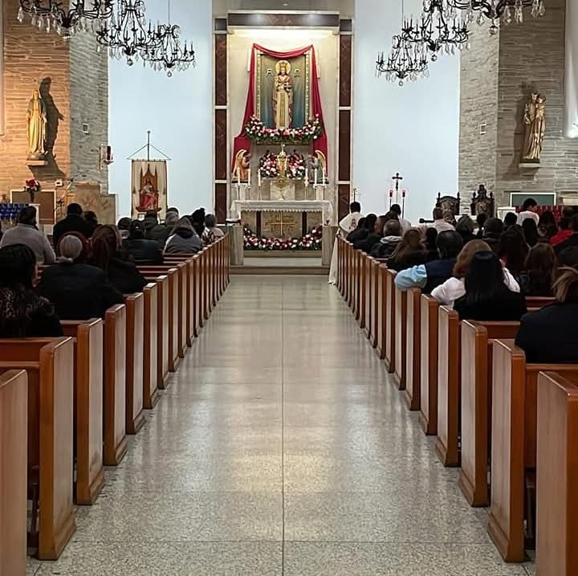
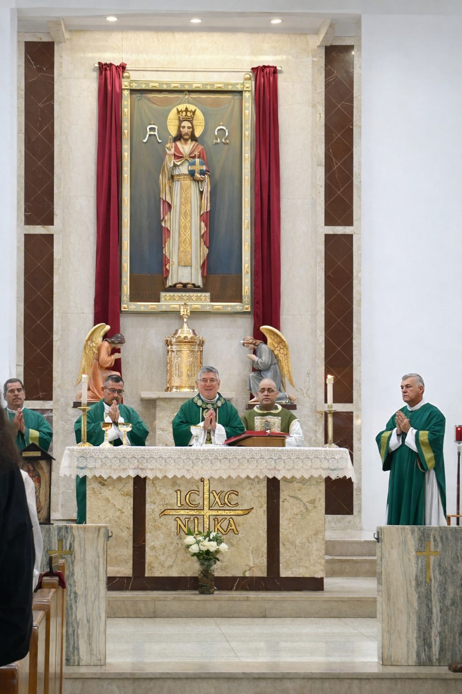

Confessions
Sacrament of Reconciliation (Confessions).
Monday – Friday
5:30 pm – 5:50 pm
Saturday
3:00 pm – 4:00 pm
For more information, please contact the parish office:(956) 723-4267.
Mass, confession, adoration, and prayer opportunities for the whole parish.

For holy days of obligation, check the Bulletin or the News section.

Sacrament of Reconciliation (Confessions).
Join us in prayer before the Blessed Sacrament.
Baptism, First Communion, Confirmation, Marriage—contact us to get started.
Stories of faith, community, and how Christ works in our parish family.
John Smith| Parishioner
I truly feel that this church is my home. It is a very kind community and everyone is welcome. I have loved my years here, and it is wonderful to serve and learn more about Jesus Christ together. Amen.
Maria Garcia| Parish Volunteer
Serving in a ministry has strengthened my faith and helped my family grow closer. The support, kindness, and prayer here remind us that we are never alone—God meets us through His people.
David Rodriguez| New Parishioner
From my first Mass, I felt welcomed. The homilies speak to everyday life, and the community has been a blessing. I’m grateful to have found a parish that feels like home.